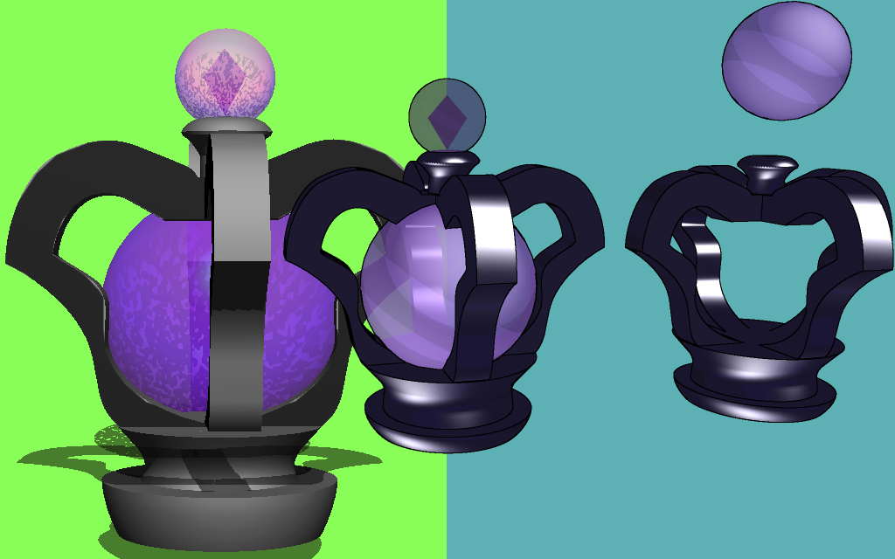

3DCGで作成されたダークオーブもどき
サイトのラフには、
「3DCGでダークオーブを回転させる」
などと無謀なことが書かれていました。
筆者は小学生以来、3DCGをやったことがありません。
Google Sketchup（今は別の会社のソフトになっているようです）
を使う方法等、いろいろ考えたのですが、
最終的にはPhotoshopの3DCG機能を使って無理やりモデリングし、
それをMetasequoiaに持っていって完成させています。
Metasequoiaのポリゴンを削る機能は素晴らしく、
驚くべきことに
出力版のダークオーブのポリゴンデータは297KBしかありません。
サイトでくるくる回っているあれを見ても、そんな軽いデータには見えないと思います。
素晴らしすぎるMetasequoia。
結局、小学生同然の筆者のモデリングスキルでは
「もどき」しか作れませんでしたが‥‥。

↑左の怪しいのがPhotoshopでの画面
↑Metasequoiaのレンダリング画像を
Photoshopでレタッチ（落書き）したのが右
サイトではWebGLで動かすわけですから、
obj形式にしなければならない、しかしうまくエクスポートできない‥‥
そんな中、Metasequoiaのmqo形式のデータを
そのままWebGLのThree.jsで扱えるライブラリに出会いました。
これがばっちり！
ポリゴンもマテリアルもばっちりでした。
あのライブラリがなければかなりの苦境だったことでしょう。
んで、適当にやってたら、まぁできました。（雑
実際、どういうライブラリを使っているかはこちらをご覧ください。
使用させていただいた多数のライブラリ engine.min.js
↑左がIE11、右がIE10の画面
WebGLが動くかどうか判定して、
動く環境なら3Dを描画、動かない環境なら2Dを描画するようにしています。
ブラウザがWebGLをサポートしていてもメモリ不足で描画できない環境もあるようで、
今回そうした環境でも動くように書くことができています。
↑うわぁぁぁぁぁ
ページの読み込み速度／実行速度の高速化
Webページを高速化するための様々な手法が存在します。
複数のJavaScript、CSSを1つのファイルに統合する、
画像をCSS Spriteとして1つのファイルに統合する、
CSSの@importは使わない、
画像をData URI Schemeにする‥‥等です。
これでHTTP Requestの数が減らせるわけですから、
読み込み速度が高速化します。
アニメーションについてはJavaScriptよりも
CSS3が圧倒的にパフォーマンスが良いです。
JavaScriptによるDOM操作は
極力使いたくないものだと考えてください。
環境次第ですがCSS3だとGPU支援が効くという利点もあります。
今回、古いブラウザではアニメーションが動かなくてもいい、
と割り切って考え、ほぼCSS3でアニメーションを実現させています。
発火処理はJavaScriptで書けばよし、settimeoutで遅延させるもよし。
アニメーション用のスタイルシートを外せば一瞬で停止するのも魅力的です。
（ま、唯一、スクロールで回転する星だけは、JavaScriptでやってますが‥‥。）
あと、JavaScriptの高速化手法として
セレクタはコストの高いclassではなくIDを用いる‥‥等もあります。
操作する可能性のあるelementには
かたっぱしからIDを割り振って、
IDで操作しておけば間違いありません。
これら汎用的な手法を取り入れつつ、
今回は独自の高速化処理を施しています。
‥‥というと凄そうに聞こえますが。
今回は
JavaScriptやCSSで用意した多数のギミックがあります。
そのまま全部を動かすと実行速度が遅くなると考え、
「画面に映っていないものは描画しない」
という処理をJavaScriptで書いています。
そのためには「画面内に要素が存在しているか」を適宜調べ、
要素が存在していれば描画イベントを発火させるコードを書けばよいわけです。
「画面内に要素が存在しているか」を調べるライブラリは
既にいろんなものがあると思いますが、
今回は簡単に自作してみました。
結構ちゃんと動いているっぽいのでよかったです。
えーと、その部分のコードは、
かなりスパゲッティーコードになっているので‥‥
かわりに、
User Agent文字列を見て、ユーザーがモバイルかパソコンか判別するコードを貼ります。
こちらは既存のライブラリを改造させていただきました。
使い勝手はよいと思います。
これによってモバイルからのアクセスの時は処理を減らしています。
ライブラリ mobiledetection.js